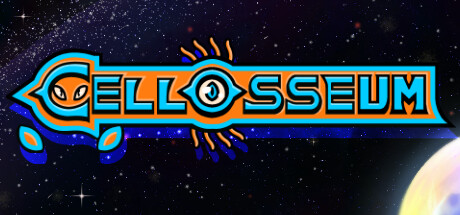

Cellosseum
Link to Steam page: https://store.steampowered.com/app/2557580/Cellosseum/?beta=1
Cellosseum is a bullet heaven following the progress of a lone cell as it battles a variety of enemies on its quest to guide the evolutionary process of life itself. Upgrade your attacks, shields, health, and speed to understand your role in the creation of life on the planet of Ceres Prime.
Controls
- Movement: WASD
- Shoot: Left click
- Parry: Right click
- Pause menu: Esc
- Upgrade menu: Space bar
Credits
WolverineSoft Studio
My Contributions:
- Upgrade Menu: selectable upgrade options, detailed descriptions on mouse hovering, player stats list, player inventory.
- Pause Menu: pause, resume, restart, audio settings.
- Main Menu: start game, quit, credits.
- Narrative cutscenes
Technology used:
C# and Unity.